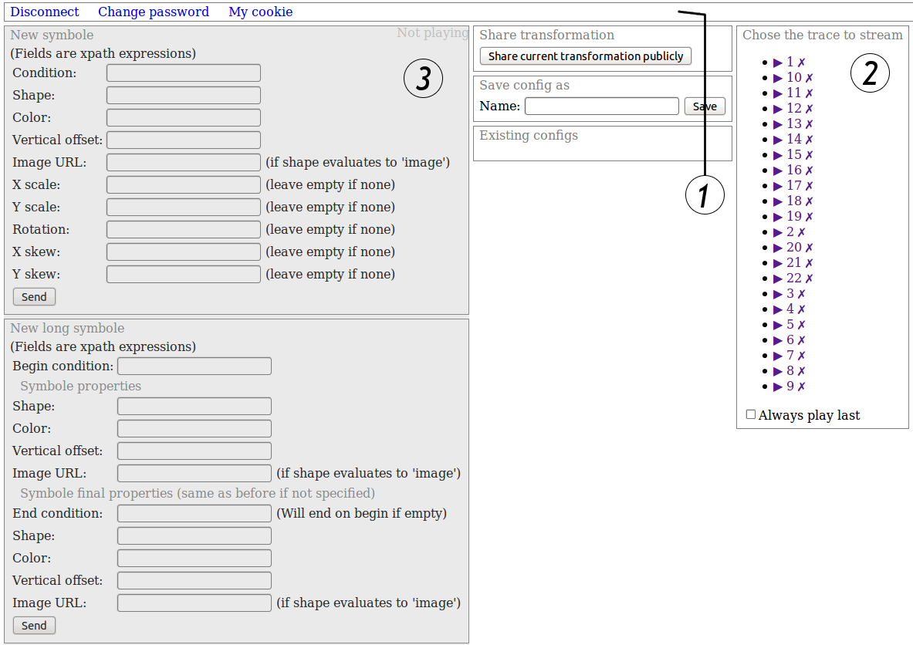
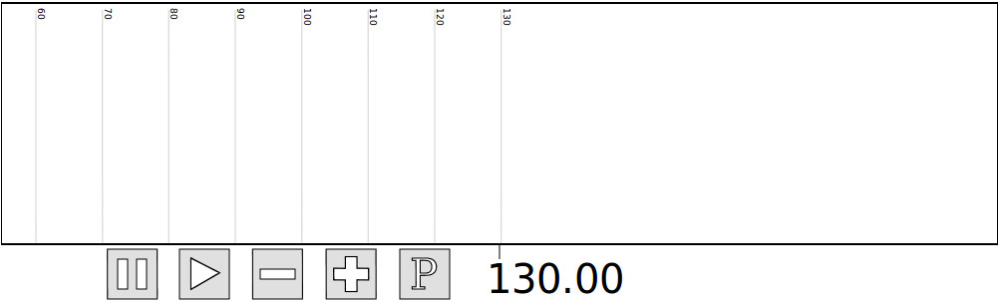
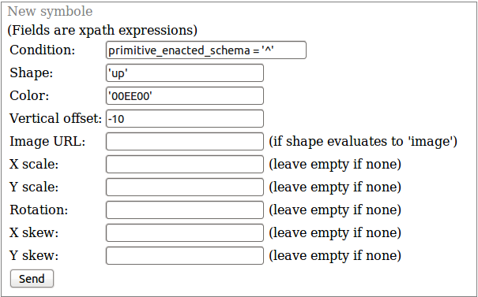
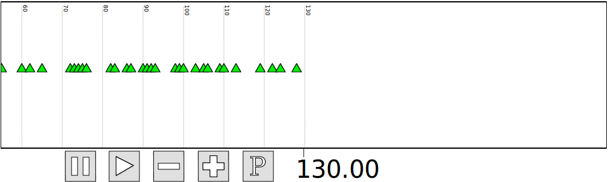
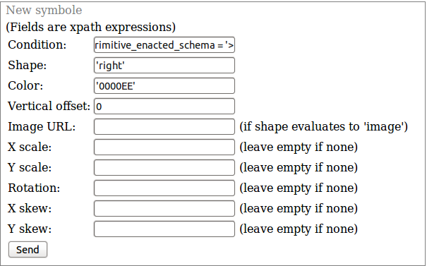
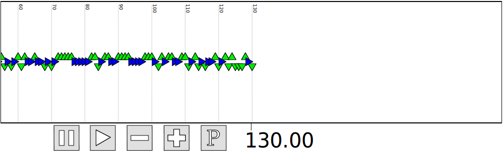
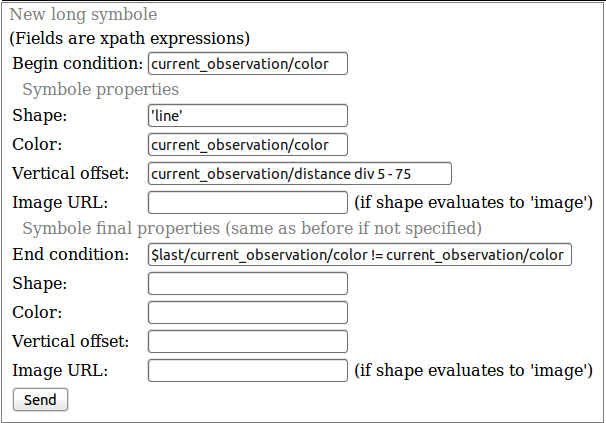
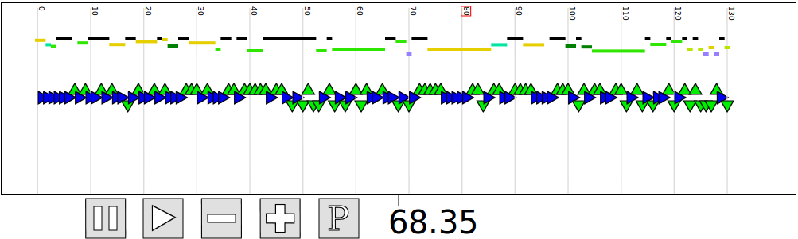
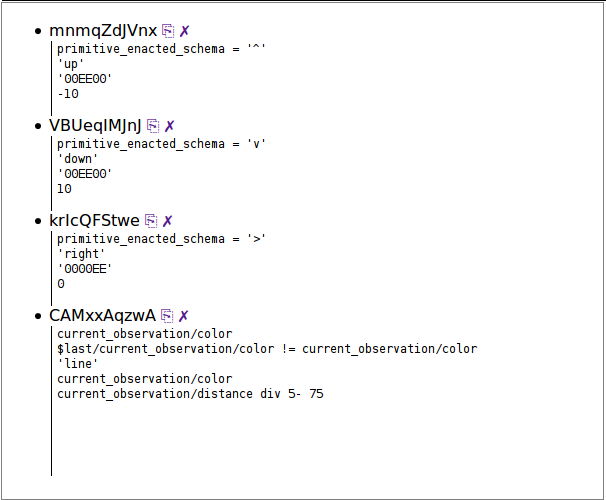

Abstract Lite is designed to allow one to visualize their agent's activity traces in real time. The most interesting features is one can (and has to !) create a custom view, and modify it interactively.
In this guide, we will see how to do that, and show a simple exemple. We will fist see how to instrument your agent. Then, we will show how to use the two configuration panels, allowing one to display simple symbols. Then we will go on a quick tour of the stylesheets you may want customize, and finally see how the pipelines work.
A basic knowledge of XML, HTML and XPATH is assumed. Though not strictly necessary, knowing XSLT and SVG will allow you a much more advanced use of the tool.
To run Abstract Lite, you must have it installed on a server. The interface is known to run on recent Mozilla Firefox or Google Chrome browsers, but will probably fail at it on any other one.
A java tracer class is available in the subdir java-tracer/ . It will help you instrument your program, and manage the communication with Abstract Lite. A javadoc is available in java-tracer/tracer-doc/index.html.
To instantiate the tracer, you have to give the constructor the URL indicating where to send the trace, and the stream cookie specific to your user. To get this cookie, log into Abstract Lite and click 'My cookie'. The declaration should look like this:
m_tracer = new XMLStreamTracer("http://vm.liris.cnrs.fr:34080/abstract/lite/php/stream/", "fjSmkmyvAKgByfDAfXuYGjAJLzrWrf");
You can then create obsels, by (i) creating it with the newEvent method giving it that event date, (ii) populating it with the addEventElement methods, and (iii) if necessary, add any number of element sub-levels with the addSubelement methods. When the event is completed, finish it with finishEvent, or it will be automatically finished when you start a new one. Note that we recommend that you create only one event for each date (this will facilitate the transformations).
The first thing you have to do is to create a user. You have to give him the permissions to use the forms and the file edition from the administration panel (if you are not administrator, contact him).
When you log in, you should get something like that:
➀ At the top, the menu bar allows you basic operations. Clicking My cookie lets you see your stream cookie.
➁ The trace selector allows you to chose the trace you want to display or play. Old stored trace as well as traces currently being streamed in are displayed here. This bar is initially empty, and is updated when a new trace is streamed. The Always play last checkbox at the bottom of the panel ➁ activates a mode in which new traces streamed into the system are automatically played.
➂ The configuration panels (including all the grey panels, as well as the three of Share transformation, Save config as, and Existing configs) allow you to configure symbol rules (defining when and how symbols will be displayed), and to manage such configurations (save and load sets of symbol rules). The New symbole and New long symbole forms serve to create new rules. Just beneath those (not visible here), is the list of the current rules. The Save config as form save all the current rule with the name you give it. The saved configurations then show in the list below (Existing configs, empty here), allowing you to load them back.
After you click on a trace in the panel ➁, the player appears :

Pressing the play button triggers the displaying of the trace, and the pause button will stop it. The plus and minus buttons let you zoom in and out (horizontally only), and the P button opens the current view in a separate window allowing you to save or print it without the whole interface.
When you press play, as no symbol rule is defined yet, the ticks will be the only displayed elements :

You can drag inside the player box to shift the view, and click on a symbol to display the data of its original event (it will be shown in the box just below the player).
So we now need to define symbol rules. the form fields content must be expressed in XPATH. The expressions given will be interpreted in the context of each event. The events are represented in the form of XML trees, which structures are those constructed with the java tracer. The expression results are then fed to the function that draws the symbols. The Condition fields are special, as their expected results are booleans, and determine whether the symbol will be draw (in the case of a punctual symbol) or when the symbols begins and ends (in the case of a long symbol).
In our example trace, the event data includes a field named 'primitive_enacted_schema' which basically tells what action the agent has just done. It take the value '^' if the agent turned left, 'v' if it turned right, or '>' if it advanced forward. We define the first rule as this:
This rule defines that the symbol 'up' (that is, a triangle pointing up) should be draw whenever the field primitive_enacted_schema contains text '^', in green ('00EE00') and 10 pixels above the center.
When sent, the view is modified to display that :
Following the same schema, we define those for the other actions :
In the end, we get that view :
The second form works similarly. For example, we could create a rule that will draw lines for the intervals of equals values of the property 'current_observation/color'. They will be positioned according to the property 'current_observation/distance'. Such a rule would look like :
And would give the result:
As you can see in the previous example, the variable $last represents the previous obsel in the stream.
The XPATH language (version 1.1 with our xslt lib) is quite limited, and in particular, we sometimes needed conditional structures, that are tricky to do in this version of the langage. We then povide a function that make this easier :
my:ifthenelse(<condition>, <value if true>, <value if false>)
Its return value is either its second or its third parameter.
The symbol list (below the symbol forms) is now populated with the rules we just created :
The transformation that occurs to an obsel between the time it enters the system and the time it is displayed on the screen take place into a transformation pipeline. The obsels from the agent are pushed at the entry of the pipeline, they transite through its components, and at the end, the result is sent to the player to be printed on the screen. The transformation components are organized in a lattice.
This lattice is defined in the file pipeline.xml. To forbid circles, transformations are organized into levels : the obsels will travel first through the levels that occur first in the file. Each transformation possess sources that define from where its incoming obsel will come. Special sources are __input__ that are the raw obsel source, and __config__ from which come special obsels from the user interface (but there is no need to dig more on the config unless you aim at creating a new generic transformation with forms and all -- like the one that executes the symboles rules). The output part at the end defines from where are taken the obsels that are sent to the view.
<pipeline> <default-scale>6.666666</default-scale> <default-center>0</default-center> <graph-width>240</graph-width> <levels> <level> <transformation type="XSLT"> <name>select-normalize</name> <sources> <source>__input__</source> </sources> <file>select-normalize.xsl</file> </transformation> <transformation type="XSLT"> <name>clock</name> <sources> <source>__input__</source> </sources> <file>clock.xsl</file> </transformation> </level> <level> <transformation type="PHP"> <name>buffer-reconfigure</name> <sources> <source>__config__</source> <source>select-normalize</source> </sources> <file>BufferReconfigureTransformation.inc.php</file> <classname>BufferReconfigureTransformation</classname> </transformation> <transformation type="XSLT"> <name>tooltip</name> <sources> <source>select-normalize</source> </sources> <file>tooltip.xsl</file> </transformation> </level> <level> <transformation type="XSLT"> <name>config-SVG</name> <sources> <source>select-normalize</source> <source>buffer-reconfigure</source> </sources> <file>configSVG.xsl</file> </transformation> <transformation type="XSLT"> <name>simple-SVG</name> <sources> <source>select-normalize</source> </sources> <file>simpleSVG.xsl</file> </transformation> </level> </levels> <output> <source>simple-SVG</source> <source>config-SVG</source> <source>clock</source> <source>tooltip</source> </output> </pipeline>
The base stylesheets aim to provide necessary informations to the player (clock.xsl), draw the ticks (simpleSVG.xsl), as well as to execute the symbole rules and draw the result (BufferReconfigureTransformation.php and configSVG.xsl). The stylesheet select-normalise.xsl filters and selects the incoming data (by default, it doesn't filter anything).
You may modify simpleSVG.xsl if you want to dram custom shapes. If you want to change what's displayed in the box below the player when you click on an obsel, you may want to modify tooltip.xsl. However, you *will* need to know basic XSLT and SVG.
The pipeline generate instructions that are passed to the player. The player then executes them. These are 4 instructions : add, delete, clock, tooltip.
The instruction add allows you to add a given obsel (ie an SVG element) into the view.
The instruction delete deletes the obsel having the given id from the view.
The instruction clock tells the player at which point of the stream we currently are, resulting in the view to scroll to this date (the player does not automatically scroll to the latest obsel, because we may want the stream obsels in the future, without scrolling to them).
The instruction tooltip set the association between the given obsel and the given tooltip content (in HTML).
One more special element that looks like an instruction is the save element, that allows you to save informations (a value or a node-set) for use in a future obsel's processing. This can be especially useful when drawing symbols that take informations from multiple obsels to draw, thou its can be a little bit tricky.
We will see these instructions in more details in the example
We show here the simpleXML stylesheet in its initial state. Note the includes : obsel-state.xsl is necessary to the operation, while shapes.xsl provide shape drawing facilities in the form of the draw-shape template.
<?xml version="1.0" encoding="UTF-8"?>
<xsl:transform xmlns:xsl="http://www.w3.org/1999/XSL/Transform"
xmlns:exsl="http://exslt.org/common" xmlns:math="http://exslt.org/math"
xmlns:dyn="http://exslt.org/dynamic" extension-element-prefixes="exsl math dyn"
version="1.1">
<xsl:param name="state-filename" />
<xsl:param name="name" />
<xsl:output method="xml" omit-xml-declaration="yes" indent="no" />
<xsl:strip-space elements="*" />
<xsl:include href="obsel-state.xsl" />
<xsl:include href="shapes.xsl" />
<!-- Match the obsels from the select-normalizer, that is, the ponctual
obsels. -->
<xsl:template match="obsel" mode="named-saves">
<xsl:param name="state" />
<!-- We first define some variables which values we will use to draw the
shape. -->
<xsl:variable name="obsel-type">
<xsl:choose>
<xsl:when test="type">
<xsl:value-of select="type" />
</xsl:when>
<xsl:otherwise>
<xsl:text>action</xsl:text>
</xsl:otherwise>
</xsl:choose>
</xsl:variable>
<!-- Lateral position of the shape. -->
<xsl:variable name="begin-position" select="0" />
<xsl:variable name="end-position"
select="$begin-position + number(@end) - number(@begin)" />
<xsl:choose>
<xsl:when test="$obsel-type = 'action'">
<add>
<!-- We create the embedding group. -->
<g id="{@id}-ns" obsel-id="{@id}" date="{@date}" stroke="#000000">
<xsl:call-template name="draw-num-iter">
<xsl:with-param name="begin-position" select="$begin-position" />
<xsl:with-param name="end-position" select="$end-position" />
<xsl:with-param name="vertical-offset" select="-110" />
</xsl:call-template>
</g>
</add>
</xsl:when>
<xsl:otherwise></xsl:otherwise>
</xsl:choose>
</xsl:template>
<xsl:template name="draw-num-iter">
<xsl:param name="begin-position" />
<xsl:param name="end-position" />
<xsl:param name="vertical-offset" />
<xsl:if test="number(@date) mod 10 = 0">
<xsl:call-template name="draw-shape">
<xsl:with-param name="vert-level" select="$vertical-offset" />
<xsl:with-param name="begin-position" select="$begin-position" />
<xsl:with-param name="shape-type" select="'tick-sided-left'" />
<xsl:with-param name="text-value" select="clock" />
<xsl:with-param name="shape-color" select="'#000000'" />
<xsl:with-param name="height" select="'280'" />
</xsl:call-template>
</xsl:if>
</xsl:template>
</xsl:transform>
Let's see how it works. The transformation's point of entry is the template that matches obsel elements. It will execute once for each obsel encountered, and call sub-templates to actually generate the various shapes. Only one sub-template is called at the moment, the draw-num-iter template. This template is the one that draws the ticks.
If you look at what it does in more details, you will notice the SVG elements (including what's returned by the draw-shape template) are embedded into an <add> element. This is how the add instruction works: everything inside of an <add> element will be added to the view.
Just inside that element, you can see a <g> element. Notice its attributes. They are necessary to allow the player to handle the symbol correctly and place it. The id element is necessary if you want to reference the shape later (for example to delete it). The date attribute will determine where the symbol is placed. The obsel-id correspond in our example to the id of the original obsel. The id will be used (only) to find the corresponding tooltip when the user click on this symbol (so you must be careful to create tooltip with corresponding ids; our policy here is to use the original obsel ids). The stroke attribute is not necessary, just standard SVG.
If your symbol is not punctual, but represents a time interval, you should use the attributes begin and end instead of the attribute date. The player will then stretch the symbol to cover this interval (The symbol is supposed to be 1 pixel wide before the stretching).
Inside of this <g>, is finally called the template that will generate the effective symbol SVG code. To do that, the draw-num-iter template calls draw-shape. What are the draw-shape's parameters ?
<xsl:template name="draw-shape"> <xsl:param name="vert-level" /> <xsl:param name="begin-position" /> <xsl:param name="shape-type" /> <xsl:param name="image-url" select="''" /> <xsl:param name="text-value" select="''" /> <xsl:param name="shape-color" select="''" /> <xsl:param name="height" select="'10'" /> <xsl:param name="transform" select="''" /> ... </xsl:template>
The parameters mean:
Now suppose we want to do the same long symbol than we generated previously with the form. We had a field current_observation/color and we wanted to draw and aggregate symbol for successive obsels that have the same values for this field. What we want to do then, is for each obsel, to detect whether its current_observation/color's value is the same as the previous symbol's, and extend the previous symbol until the date of the current obsel. If it is not equal, we should finish the previous symbol and create a new one.
The first thing is to make our own drawing template and call it from the entry point. The call will look like:
<xsl:template match="obsel" mode="named-saves">
<xsl:param name="state" />
<!-- We first define some variables which values we will use to draw the
shape. -->
<xsl:variable name="obsel-type">
<xsl:choose>
<xsl:when test="type">
<xsl:value-of select="type" />
</xsl:when>
<xsl:otherwise>
<xsl:text>action</xsl:text>
</xsl:otherwise>
</xsl:choose>
</xsl:variable>
<!-- Lateral position of the shape. -->
<xsl:variable name="begin-position" select="0" />
<xsl:variable name="end-position"
select="$begin-position + number(@end) - number(@begin)" />
<xsl:choose>
<xsl:when test="$obsel-type = 'action'">
<!-- This, here :. -->
<xsl:call-template name="draw-example-symbol">
<xsl:with-param name="state" select="$state" />
</xsl:call-template>
<!-- Just up there. -->
<add>
<!-- We create the embedding group. -->
<g id="{@id}-ns" obsel-id="{@id}" date="{@date}" stroke="#000000">
<xsl:call-template name="draw-num-iter">
<xsl:with-param name="begin-position" select="$begin-position" />
<xsl:with-param name="vertical-offset" select="-110" />
</xsl:call-template>
</g>
</add>
</xsl:when>
<xsl:otherwise></xsl:otherwise>
</xsl:choose>
</xsl:template>
And our template will be the following:
<xsl:template name="draw-example-symbol">
<xsl:param name="state" />
<xsl:variable name="sym-state"
select="$state/save[@name='example-sym']/symbol" />
<xsl:variable name="last-state" select="$state/save[@name='example-last']" />
<xsl:choose>
<!-- In the case we have to create a new symbol: at the beginning or
when colors mismatch between this element and the previous one. -->
<xsl:when
test="not($last-state/color) or $last-state/color != current_observation/color">
<!-- All we have to do is to add the symbol. -->
<add>
<g id="{@id}-s" obsel-id="{@id}" date="{@date}" begin="{@date}"
end="{@date}" stroke="#000000">
<xsl:call-template name="draw-shape">
<xsl:with-param name="vert-level"
select="- current_observation/distance div 5 + 75" />
<xsl:with-param name="begin-position" select="0" />
<xsl:with-param name="shape-type" select="'line'" />
<xsl:with-param name="shape-color"
select="concat('#', current_observation/color)" />
</xsl:call-template>
</g>
</add>
<!-- We save the symbole caracteristics, we will probably have to draw
it again. -->
<save name='example-sym'>
<symbol id="{@id}-s" obsel-id="{@id}" begin="{@date}" end="{@date}"
vert-level="{- current_observation/distance div 5 + 75}"
color="#{current_observation/color}" />
</save>
</xsl:when>
<xsl:otherwise>
<!-- We want to lengthen the symbole, so we first have to delete
the old one, before we draw a longer one -->
<delete obsel-id="{$sym-state/@id}" />
<!-- We draw the longer symbol, using the saved properties. -->
<add>
<g id="{$sym-state/@id}" obsel-id="{$sym-state/@obsel-id}" date="{$sym-state/@begin}"
begin="{$sym-state/@begin}" end="{@date}" stroke="#000000">
<xsl:call-template name="draw-shape">
<xsl:with-param name="vert-level" select="$sym-state/@vert-level" />
<xsl:with-param name="begin-position" select="0" />
<xsl:with-param name="shape-type" select="'line'" />
<xsl:with-param name="shape-color" select="$sym-state/@color" />
</xsl:call-template>
</g>
</add>
</xsl:otherwise>
</xsl:choose>
<!-- We save the current obsel color for the next iteration. -->
<save name='example-last'>
<color>
<xsl:value-of select='current_observation/color' />
</color>
</save>
</xsl:template>
The nodes we save with the <save> instruction will be passed back to us by the state param next time the template is executed, allowing us to remember the last color value thanks to the example-last save, and the symbol characteristics thanks to the example-sym save.